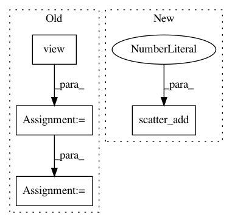

62a05d5e2611f6ec8fda2c7d7c5b57cf8b64402b,torch_geometric/nn/functional/pool/pool.py,,max_pool,#Any#Any#Any#Any#,5
Before Change
input = scatter_max(cluster, input)
position = scatter_mean(cluster, position)
index = cluster[index.view(-1)].view(2, -1) // Replace edge indices with cluster indices.
mask = index[0, :] != index[1, :] // Remove self-loops.
index = coalesce(index) // Remove duplicates.
return input, index, position
After Change
def max_pool(input, index, position, cluster):
_cluster = cluster.unsqueeze(1).expand(-1, input.size(1))
input = scatter_add(_cluster, input, dim=0)
return (input,) + _pool(index, position, cluster)
def average_pool(input, index, position, cluster):
In pattern: SUPERPATTERN
Frequency: 3
Non-data size: 4
Instances
Project Name: rusty1s/pytorch_geometric
Commit Name: 62a05d5e2611f6ec8fda2c7d7c5b57cf8b64402b
Time: 2018-01-12
Author: matthias.fey@tu-dortmund.de
File Name: torch_geometric/nn/functional/pool/pool.py
Class Name:
Method Name: max_pool
Project Name: rusty1s/pytorch_geometric
Commit Name: 3b66ade462ac29a13daf707dc08222da7d303e69
Time: 2018-12-15
Author: matthias.fey@tu-dortmund.de
File Name: torch_geometric/nn/glob/set2set.py
Class Name: Set2Set
Method Name: forward
Project Name: rusty1s/pytorch_geometric
Commit Name: 94ecd2ae789c038e2e8ed9ed8e83f9adfe3eb447
Time: 2018-05-02
Author: matthias.fey@tu-dortmund.de
File Name: torch_geometric/utils/softmax.py
Class Name:
Method Name: softmax